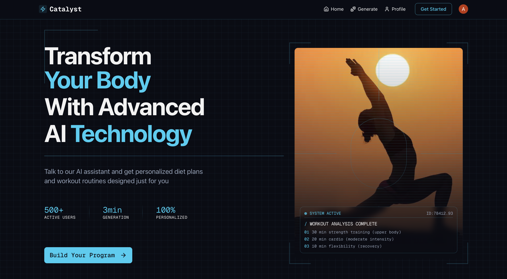
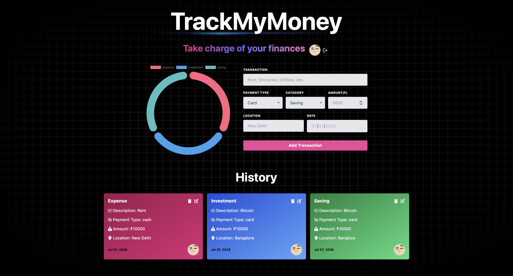
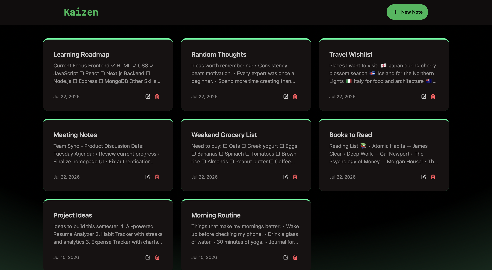

I build because I'm curious, and I learn because there's always more to discover.
I still remember being in sixth grade, wondering how a computer could display images on a screen. I didn't know the answer then, but I knew I wanted to find out. That question sparked a curiosity that has stayed with me ever since.
In eleventh grade, I discovered Python, and programming quickly became my favorite way to learn. I loved writing small programs, experimenting with different inputs, and seeing how a few lines of code could create something meaningful. I even built my chemistry project in Python—a simple application that displayed information about an element based on its atomic number. It wasn't a groundbreaking project, but it showed me the joy of turning ideas into something real.
Today, I build projects around the things that genuinely interest me. My passion for fitness inspired me to create an AI-powered fitness application. My interest in personal finance led me to build a finance tracker. For me, every project begins with curiosity, and every finished project leaves me with a better understanding than when I started.
As I continue to grow, I'm looking for opportunities where curiosity is encouraged, questions are welcomed, and learning is part of the culture. Because for me, software has never been just about writing code—it's about exploring ideas, solving problems, and discovering what's possible.
Every meaningful project begins with a question worth exploring.
I learn best by turning ideas into products, experiments, and experiences.
I'm always looking for environments where curiosity is valued, questions are encouraged, and learning never stops.
A collection of projects where I explored full-stack development, AI, and modern web technologies.

An AI-powered fitness application that creates personalized workout and nutrition plans through real-time voice conversations. Users can discuss their fitness goals, injuries, and dietary preferences naturally to receive customized recommendations.

A full-stack personal finance tracker that helps users manage expenses, savings, and investments through an interactive dashboard with secure authentication and real-time transaction management.

A responsive full-stack note-taking application built with the MERN stack, allowing users to create, edit, and organize notes while demonstrating production-ready REST API development.
Things I Love Apart From Tech
I started practicing yoga when I was fourteen. Along the way, it brought me national, state, and university-level medals, but that's never been the reason I stayed.
Yoga has taught me patience, discipline, and the value of showing up every day, even when progress isn't immediately visible. Those lessons have shaped the way I approach learning, building, and life far more than any competition ever could.
Reading is how I explore new perspectives, and journaling is how I understand my own.
Whether it's finance, self-improvement, spirituality, or Hindi literature, I enjoy ideas that challenge the way I think. Journaling has become my daily ritual—a space to plan with intention, reflect with honesty, and capture thoughts that might otherwise be forgotten.
Some of my best ideas don't come from sitting at a desk—they come from being outside.
I love exploring new places, hiking through trails, and spending time in nature. It reminds me to slow down, stay curious, and appreciate the journey as much as the destination. Sometimes, a change in scenery is all it takes to see familiar problems from a completely different perspective.
If something here resonated with you, or you'd simply like to start a conversation, I'd love to hear from you.